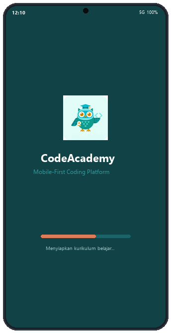
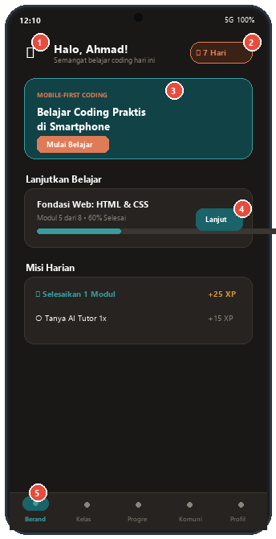
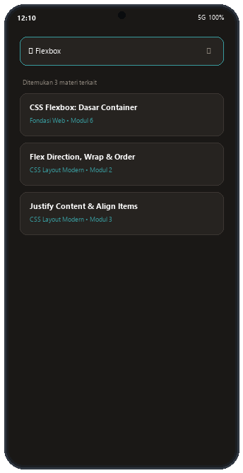
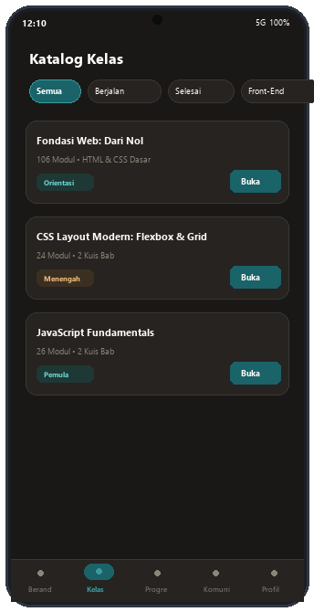
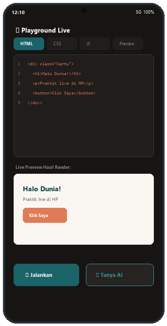
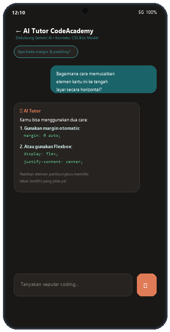
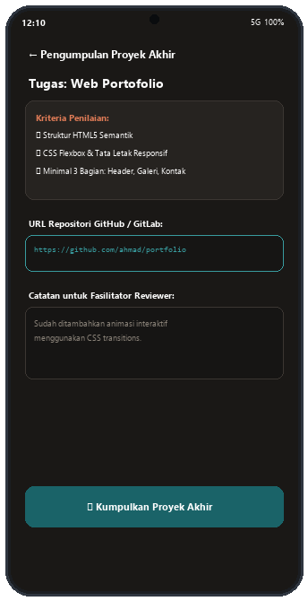
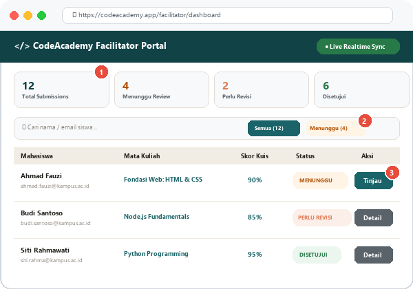

16. Portal Web Fasilitator & Penilaian Tugas Akhir16
17. Portal Web Verifikasi Sertifikat & Validasi Kredensial17
MANUAL BOOK APLIKASI CODEACADEMY(VERSI MOBILE)
PENGENALAN APLIKASI CODEACADEMY
Aplikasi CodeAcademy merupakan platform pembelajaran pemrograman dan web development berbasis mobile-first yang dirancang untuk memberikan pengalaman belajar coding terstruktur, fleksibel, dan interaktif langsung dari smartphone. Aplikasi ini dilengkapi beragam fitur utama:
Kurikulum Komprehensif: Front-End, Back-End, Python, Bahasa C, dan C++.
AI Tutor Cerdas: Didukung Google Gemini AI untuk panduan coding dan debugging real-time.
Interactive Playground: Eksekusi HTML, CSS, JS, dan logika program langsung di HP.
Sistem Kuis & Evaluasi: Ujian akhir modul berwaktu dengan passing grade standar.
Forum Diskusi Terintegrasi: Diskusi per kelas dan Diskusi Hangat antar siswa.
Pengumpulan Proyek Akhir: Penilaian berbasis rubrik standar industri software engineering.
Sertifikat Digital Resmi: Dilengkapi ID verifikasi kredensial kelulusan unik.

MANUAL BOOK APLIKASI CODEACADEMY(VERSI MOBILE)
DOWNLOAD DAN INSTALASI APLIKASI VERSI MOBILE
Aplikasi CodeAcademy dapat dipasang pada smartphone berbasis Android dengan spesifikasi minimum:
• Sistem Operasi: Android 8.0 (Oreo) atau versi yang lebih baru (API Level 26+).
• Kapasitas Memori: RAM minimal 2 GB dan ruang penyimpanan kosong minimal 150 MB.
• Koneksi Jaringan: Memerlukan akses internet aktif untuk AI Tutor dan sinkronisasi data.
Langkah - Langkah Instalasi Paket APK:
1. Unduh berkas instalasi CodeAcademy-v1.0-release.apk dari portal distribusi resmi / repository kampus.
2. Buka folder Unduhan (Downloads) melalui aplikasi Pengelola Berkas (File Manager) di smartphone Anda.
3. Ketuk berkas APK tersebut. Jika muncul peringatan keamanan sumber tidak dikenal, pilih opsi 'Setelan' lalu aktifkan izin 'Izinkan penginstalan aplikasi dari sumber ini' (Allow from this source).
4. Pada dialog penginstal paket yang muncul, ketuk tombol INSTAL (lihat tanda penunjuk nomor 1).
5. Tunggu proses instalasi selesai, lalu ketuk 'Buka' untuk mulai menggunakan aplikasi.
Keterangan Gambar:
1Tombol Instal: Ketuk untuk mengonfirmasi dan memulai pemasangan aplikasi CodeAcademy ke perangkat smartphone Android Anda.
MANUAL BOOK APLIKASI CODEACADEMY(VERSI MOBILE)
PENDAFTARAN AKUN, MASUK & PEMULIHAN SANDI
Setelah aplikasi terbuka, pengguna akan diarahkan ke Form Masuk (Login). Bagi pengguna baru yang belum memiliki akun, silakan lakukan registrasi dengan mengetuk tautan 'Daftar Sekarang'.
Keterangan Gambar:
1Input Email & Kata Sandi: Masukkan alamat email terdaftar dan kata sandi akun (minimal 6 karakter).
2Lupa Kata Sandi?: Fitur pemulihan akun untuk mengatur ulang sandi baru jika pengguna lupa password lama.
3Tombol Masuk & Google Sign-In: Masuk memakai email/sandi atau autentikasi instan Masuk / Daftar dengan Google menuju Onboarding & Beranda.
4Tautan Daftar Sekarang: Mengalihkan pengguna baru ke formulir registrasi akun siswa baru.
MANUAL BOOK APLIKASI CODEACADEMY(VERSI MOBILE)
ALUR ONBOARDING PENGENALAN JALUR BELAJAR
Bagi siswa yang baru pertama kali mendaftar, sistem akan menyajikan alur interaktif Onboarding sebanyak 5 langkah untuk mempersonalisasi jalur belajar dan menetapkan komitmen:
1. Welcome Step: Sambutan selamat datang serta penjelasan visi belajar coding mobile-first.
2. Track Selection Step: Siswa memilih salah satu dari 4 peminatan kurikulum spesialisasi:
• Front-End Development: HTML, CSS, Modern Flexbox & Grid, JavaScript.
• Back-End Development: Node.js runtime, asynchronous, REST API, Database.
• Python Programming: Logika sintaks, otomatisasi skrip, struktur data, dan OOP.
• Bahasa C & C++: Fondasi arsitektur komputasi, alokasi memori pointer, dan STL.
3. Code Preview Step: Simulasi visual membaca penjelasan sintaks dan editor kode interaktif.
4. Community Step: Pengenalan ekosistem forum tanya-jawab dan kompetisi Papan Peringkat.
5. Plan Summary Step: Rekap preferensi target belajar harian dan memulai sesi belajar pertama.
MANUAL BOOK APLIKASI CODEACADEMY(VERSI MOBILE)
PENGENALAN FITUR BERANDA (HOME DASHBOARD)
Beranda adalah dashboard utama yang menampilkan status progres belajar, misi harian, dan pintasan:

Keterangan Gambar:
1Menu Samping (Drawer): Membuka laci navigasi untuk fitur Cari Materi, Tersimpan, dan Playground.
2Badge Runtutan (Streak Harian): Menghitung hari aktif belajar berturut-turut untuk menjaga disiplin koding.
3Carousel Banner Promosi: Menampilkan kartu highlight materi unggulan dan target pencapaian XP mingguan.
4Kartu Lanjutkan Belajar: Akses langsung melanjutkan modul terakhir yang sedang dipelajari dengan satu klik.
5Bilah Navigasi Bawah & Codi Challenge: Akses cepat 5 menu inti (Beranda, Kelas, Progres, Komunitas, Profil) plus Codi Daily Tip & Tantangan 1 Menit (+15 XP).
MANUAL BOOK APLIKASI CODEACADEMY(VERSI MOBILE)
NAVIGASI MENU SAMPING & PENCARIAN MATERI
Fitur Drawer Menu dan Pencarian Materi Global memungkinkan navigasi lintas fitur secara efisien:

Keterangan Gambar:
1Profil Header Drawer: Menampilkan inisial avatar, nama siswa, peringkat level (Lv. 4), dan total XP.
2Menu Aktivitas: Pintasan menuju Modul Tersimpan (Bookmarks), Notifikasi Belajar, dan Sertifikat Saya.
3Menu Tools Coding: Akses langsung menuju Live Playground sandbox dan sesi Tanya AI Tutor.
4Pencarian Materi Real-Time: Siswa dapat mengetik kata kunci topik (contoh: 'Flexbox', 'Loop', 'Pointer').
MANUAL BOOK APLIKASI CODEACADEMY(VERSI MOBILE)
KATALOG KELAS & DETAIL SILABUS KURSUS
Menu Kelas menyajikan kurikulum terstruktur dan silabus pembelajaran berjenjang:

Keterangan Gambar:
1Filter Kategori Jalur Belajar: Memilih kategori kelas (Semua, Front-End, Back-End, Python, C/C++).
2Pill Tingkat Kesulitan: Menandai jenjang kelas: Pemula (Hijau), Menengah (Kuning), atau Lanjut (Merah).
3Fast-Track Placement Test: Tes penempatan untuk melompati materi dasar bagi yang sudah paham.
4Struktur Silabus Bab: Modul dikelompokkan ke dalam Bab Persiapan, Pendahuluan, Inti, dan Evaluasi.
MANUAL BOOK APLIKASI CODEACADEMY(VERSI MOBILE)
FITUR PEMBELAJARAN INTERAKTIF (MATERI READER)
Layar baca modul didesain secara mobile-first untuk kenyamanan membaca penjelasan teknis dan kode:
Keterangan Gambar:
2Tombol Bookmark: Menandai materi ke dalam daftar Modul Tersimpan agar mudah diakses kembali.
3Blok Kode Syntax Highlighting: Format kode berwarna standar industri lengkap dengan tombol 'Salin Kode'.
4Tombol 'Coba di Playground': Membuka potongan kode langsung ke sandbox untuk diedit dan dites.
5Tombol 'Tanya AI Tutor': Mengirimkan konteks modul ke AI Tutor jika ada penjelasan yang kurang jelas.
6Tombol 'Tandai Selesai': Menyimpan status penyelesaian modul ke database Room dan memberikan +20 XP.
MANUAL BOOK APLIKASI CODEACADEMY(VERSI MOBILE)
FITUR PLAYGROUND INTERAKTIF (LIVE CODE SANDBOX)
Playground menyediakan lingkungan eksperimen koding langsung di smartphone tanpa perlu PC:

Keterangan Gambar:
1Tab Editor Bahasa: Berpindah antara editor berkas HTML, stylesheet CSS, dan skrip JavaScript.
2Live Preview Container: Menampilkan hasil render tampilan visual website secara langsung dan interaktif.
3Tombol 'Jalankan' (Run): Memicu eksekusi kode dan merender pembaruan antarmuka pada area preview.
4Tombol 'Tanya AI': Mengirimkan kode yang sedang ditulis ke AI Tutor untuk diperiksa bug atau error-nya.
MANUAL BOOK APLIKASI CODEACADEMY(VERSI MOBILE)
FITUR AI TUTOR CERDAS (DIDUKUNG GEMINI AI)
AI Tutor adalah asisten belajar personal berbasis LLM (Google Gemini API) yang siap membantu 24/7:

Keterangan Gambar:
1Konteks Modul Sadar Materi: AI otomatis memahami topik modul atau kelas yang sedang dibuka siswa.
2Prompt Pills: Pertanyaan praktis siap pakai untuk memperdalam konsep koding.
3Bantuan Debugging: Siswa dapat menempelkan error kode dan AI akan menerangkan solusinya.
4Gaya Bahasa Pedagogis: Penjelasan ramah pemula, runtut langkah demi langkah, dan menyertakan analogi.
MANUAL BOOK APLIKASI CODEACADEMY(VERSI MOBILE)
SISTEM EVALUASI, KUIS BAB & HASIL EVALUASI
Untuk menguji pemahaman siswa di setiap akhir bab, aplikasi menyediakan kuis evaluasi berwaktu:
Keterangan Gambar:
1Timer Hitung Mundur: Waktu ujian dibatasi (misal 10 menit) untuk melatih ketangkasan analisis kode.
2Pilihan Ganda Interaktif: Opsi jawaban dilengkapi umpan balik visual saat dipilih oleh siswa.
3Layar Hasil Evaluasi: Mengumumkan persentase skor akhir dan status kelulusan (Lulus jika skor >= 70%).
4Reward Gamifikasi: Siswa yang lulus menerima perolehan bonus XP (+50 XP s.d. +100 XP).
MANUAL BOOK APLIKASI CODEACADEMY(VERSI MOBILE)
PENGUMPULAN TUGAS AKHIR (FINAL PROJECT SUBMISSION)
Sebagai syarat kelulusan sertifikasi pada tiap kelas, siswa wajib mengumpulkan Proyek Akhir studi kasus:

Keterangan Gambar:
1Spesifikasi & Brief Tugas: Deskripsi detail proyek nyata yang harus dibangun (misal: Web Portofolio).
3Input URL Repositori: Siswa memasukkan tautan repositori kode sumber (GitHub / GitLab / link demo).
4Tombol Kumpulkan Proyek: Mengirim submisi untuk dinilai oleh sistem/fasilitator dan membuka sertifikat.
MANUAL BOOK APLIKASI CODEACADEMY(VERSI MOBILE)
FORUM DISKUSI & KOMUNITAS BELAJAR
Komunitas CodeAcademy adalah wadah sosial edukatif untuk saling membantu menyelesaikan kendala koding:
Keterangan Gambar:
1Tab Diskusi Hangat & Hub Forum Kelas: Sorotan thread terpopuler dan hub akses ke forum masing-masing kelas WebDev.
2Filter Diskusi & Lencana Fasilitator: Menyaring Semua, Terjawab Fasilitator, Milik Saya, dan Populer secara real-time.
3Sistem Upvote, Hapus & Sinkronisasi: Beri like, hapus komentar sendiri, dan sinkron langsung dengan Portal Web Fasilitator.
4Tombol Buat Diskusi Baru: Formulir untuk mengajukan kendala baru lengkap dengan lampiran kode.
MANUAL BOOK APLIKASI CODEACADEMY(VERSI MOBILE)
PROGRES BELAJAR, GAMIFIKASI & SERTIFIKAT DIGITAL
Fitur motivasi gamifikasi dan bukti pencapaian kelulusan resmi dalam bentuk sertifikat digital:
Keterangan Gambar:
1Papan Peringkat Pelajar: Klasemen siswa teratas (Top 50) mingguan dan global berdasarkan akumulasi XP.
2Sistem Medali: Apresiasi penghargaan bagi tiga siswa dengan produktivitas belajar tertinggi.
3Sertifikat Kelulusan Resmi: Bukti kompetensi penyelesaian kurikulum kelas lengkap dengan nama siswa.
4ID Kredensial Unik: Kode verifikasi (misal: CC-2026110101-A9K3P2) untuk validasi keaslian sertifikat kelulusan.
MANUAL BOOK APLIKASI CODEACADEMY(VERSI MOBILE)
PROFIL PENGGUNA & PENGATURAN APLIKASI
Layar Profil memberikan kendali penuh dalam pengelolaan data akun dan preferensi tampilan aplikasi:
Keterangan Gambar:
1Header Profil & Statistik: Menampilkan inisial avatar, nama lengkap, jalur peminatan, dan total sertifikat.
2Peta Semangat Belajar (Heatmap): Visualisasi intensitas keaktifan koding harian siswa ala GitHub matrix.
3Pengaturan Mode Gelap (Dark Mode): Sakelar pengubah tema kontras gelap atau terang untuk kenyamanan mata.
4Pilihan Bahasa Aplikasi: Mendukung antarmuka Bahasa Indonesia, English, Jepang, dan Mandarin.
5Ulangi Onboarding & Logout: Mengganti preferensi jalur belajar atau keluar dari sesi akun aplikasi dengan aman.
MANUAL BOOK APLIKASI CODEACADEMY(VERSI MOBILE & PORTAL WEB)
PORTAL WEB FASILITATOR & PENILAIAN TUGAS AKHIR
Untuk menjamin keamanan, integritas akademik, dan kenyamanan inspeksi kode, evaluasi tugas akhir dipisahkan ke Portal Web Fasilitator (/facilitator/index.html) dengan sinkronisasi Firestore real-time:

Keterangan Gambar:
1Login Firebase Auth & Allowlist: Melindungi portal dengan Email/Password atau Google Sign-In terverifikasi pada koleksi /facilitators/{email} (+ Mode Demo Offline).
2Antrean, Forum & Broadcast Pengumuman: Tab Proyek Akhir real-time, Forum Diskusi (*Belum Dijawab*), Pengumuman Kelas ke Notifikasi Android, dan Sertifikat Terbit.
3Code Inspector & Live Preview Aman: Menelaah kode HTML/CSS/JS berdampingan (layout 2-kolom) dengan frame sandbox terisolasi CSP.
4Form Rubrik & Bobot Nilai 40/60: Checklist rubrik tersimpan ke Firestore dengan perhitungan Nilai Akhir (40% Kuis + 60% Proyek).
5Penerbitan Sertifikat Otomatis: Tugas yang disetujui (skor ≥ 70) menulis sertifikat CC-... secara atomik ke Firestore & aplikasi siswa.
6Push Notifikasi Real-Time: Status kelulusan dan catatan penguji langsung diterima di layar ponsel siswa secara instan.
MANUAL BOOK APLIKASI CODEACADEMY(VERSI MOBILE & PORTAL WEB)
PORTAL WEB VERIFIKASI SERTIFIKAT & KREDENSIAL
CodeAcademy menyediakan Portal Verifikasi Publik (/verify.html) untuk memvalidasi keaslian dokumen sertifikat digital oleh pihak kampus, perusahaan rekruter, maupun masyarakat:
Keterangan Gambar:
1Pencarian ID Kredensial Unik: Memvalidasi kode sertifikat resmi berawalan CC- (misal: CC-2026110101-A9K3P2) langsung ke koleksi certificates Firestore.
2Lencana Kredensial Terverifikasi: Indikator status keabsahan resmi (Verified Authentic) bertanda centang hijau.
3Identitas Lengkap Siswa: Menampilkan nama siswa, judul spesialisasi kurikulum yang diselesaikan, dan tanggal lulus.
4Detail Skor & Predikat: Transparansi nilai tugas akhir yang diberikan oleh fasilitator beserta predikat kompetensi.
5Tautan Terintegrasi Mobile: Tombol Bagikan pada smartphone otomatis menyertakan link publik menuju portal verifikasi ini.
6Pencegahan Pemalsuan Dokumen: Setiap sertifikat terkunci secara kriptografis dengan akun siswa dan ID kursus terdaftar.